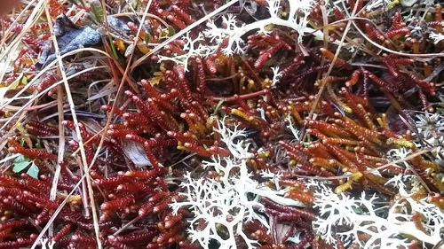

Pleuroziaceae
Sacwort Family (common name for Pleurozia)
Pleuroziaceae is a unique, monogeneric family (Pleurozia) of leafy liverworts placed in its own order, Pleuroziales. It is highly distinctive due to its complex leaves, where the ventral lobe is modified into an intricate water sac, potentially involved in trapping small invertebrates. They are typically robust plants found in wet, peaty habitats.
Overview
The Pleuroziaceae family stands out as one of the most morphologically specialized groups among liverworts. Containing only the genus Pleurozia, it occupies an isolated position, placed in its own order, Pleuroziales. These are relatively large, robust leafy liverworts, often with distinctive reddish or purplish pigmentation, found primarily in hyperoceanic climates (regions with very high rainfall and humidity) and montane environments, typically growing in bogs, wet heathlands, or on constantly moist, peaty banks.
The most striking feature of Pleurozia is its highly complex leaf structure. Each lateral leaf is deeply divided, with the smaller ventral lobe transformed into an elaborate pitcher-like or sac-like structure (utricle) equipped with a sophisticated closing mechanism. These water sacs often contain trapped microscopic invertebrates (like rotifers and ciliates), leading to speculation about carnivory or proto-carnivory in this genus. The family's unique morphology and isolated phylogenetic position make it a subject of significant evolutionary interest.
Quick Facts
- Scientific Name: Pleuroziaceae Müll.Frib.
- Common Name: Sacwort Family (for Pleurozia)
- Number of Genera: 1 (Pleurozia)
- Number of Species: Approximately 12
- Distribution: Disjunct; Western Europe (hyperoceanic regions), Himalayas, Southeast Asia, Australasia, Pacific islands, southern South America. Found in very wet, peaty habitats (bogs, wet heaths, cloud forests).
- Evolutionary Group: Bryophytes - Liverworts (Marchantiophyta) - Jungermanniopsida - Pleuroziales
Key Characteristics
Note: Pleuroziaceae are highly modified leafy liverworts with unique features.
Gametophyte (Leafy Shoot) Structure
The dominant phase is the leafy gametophyte:
- Form: Robust, often large shoots, typically ascending or erect, forming tufts or patches. Often strongly pigmented reddish, purplish, or brownish-green.
- Stems: Relatively thick and rigid.
- Leaves: Arranged in two lateral rows, highly complex and deeply bilobed.
- Dorsal Lobe: The larger lobe, typically ovate to oblong, often concave, covering the dorsal side of the stem.
- Ventral Lobe (Water Sac): The smaller lobe, elaborately modified into a closed, pitcher-like or sac-like structure (utricle). This sac has a complex internal structure often including a lid or valve mechanism near the opening, capable of closing.
- Insertion: Complex, appearing somewhat intermediate between transverse and succubous.
- Underleaves: Typically very small and difficult to observe, or completely absent.
- Branching: Often irregular or sparsely branched.
Reproductive Structures
Species are typically dioicous.
- Antheridia: Male organs are borne in the axils of specialized bracts (androecia), usually located on shorter branches or intercalary on the main stem.
- Archegonia: Female organs are terminal on main shoots or leading branches. They are enclosed within a well-developed perianth. The perianth is typically large, inflated, often cylindrical or fusiform, and characteristically strongly plicate (folded or pleated) towards the apex, ending in a narrowed, beak-like mouth.
Sporophyte
The sporophyte develops within the perianth:
- Foot: Embedded in the stem apex tissue.
- Seta: Distinct, elongating considerably at maturity, raising the capsule well above the perianth.
- Capsule: Ovoid to ellipsoid, typically dark brown or black when mature. Capsule wall is multistratose.
- Dehiscence: Capsule splits longitudinally into four valves upon maturity.
Spores and Elaters
Contained within the capsule.
- Spores: Relatively small, spherical, typically finely papillose or granular.
- Elaters: Present, long and slender with 2 spiral thickenings, mixed among spores.
Field Identification
Identifying Pleuroziaceae (Pleurozia) is usually straightforward due to the highly distinctive leaf sacs.
Primary Identification Features
- Complex Leaves with Water Sacs: The presence of intricate, pitcher-like or sac-like structures (modified ventral leaf lobes) is the most definitive feature. These are unique among liverworts.
- Robust Habit & Coloration: Plants are typically large, robust, and often have conspicuous reddish or purplish pigments.
- Perianth (if fertile): Look for a large, inflated, strongly pleated perianth, usually with a beak-like mouth, terminating main shoots or branches.
- Habitat: Found in very wet, acidic, peaty environments like bogs, wet heathlands, blanket mires, or cloud forests.
Secondary Identification Features
- Underleaves Small or Absent: Unlike Calypogeiaceae or Lepidoziaceae, underleaves are inconspicuous.
- Leaf Insertion: Complex, somewhat transverse to succubous.
- Disjunct Distribution: Found in specific high-rainfall regions globally.
Seasonal Identification Tips
- Year-round: The distinctive vegetative features (leaf sacs, coloration) are present year-round.
- Reproductive Periods: Perianths and sporophytes may be seasonal, often maturing in late spring or summer.
Common Confusion Points
Pleurozia is highly distinctive and unlikely to be confused with other bryophytes:
- Other Leafy Liverworts: No other liverwort family possesses such complex water sacs formed from leaf lobes. Families like Frullaniaceae have helmet-shaped lobules, but these are structurally different and usually smaller.
- Simple Thalloids: Lack differentiation into stems and leaves.
- Mosses: Have radially arranged leaves (usually), often with a costa, and very different sporophyte structures.
- Carnivorous Flowering Plants: While the sacs resemble traps of some carnivorous plants (e.g., Nepenthes pitchers, Utricularia bladders), Pleurozia is clearly a bryophyte with typical liverwort stem/leaf structure and reproductive organs (perianths, capsules on setae), not flowers and seeds.
Key differentiator: The presence of the unmistakable water sacs on the leaves immediately identifies Pleurozia.
Field Guide Quick Reference
Look For:
- Leafy shoots, often robust & reddish/purplish
- Complex leaves with distinct water sacs
- Large, pleated, beaked perianth (if fertile)
- Wet, peaty habitat (bogs, wet heaths)
- Underleaves tiny or absent
Key Distinctions:
- Possesses unique water sacs (unlike all other liverworts)
- Clearly leafy (unlike thalloids)
- Has perianth (unlike perigynium of Calypogeiaceae)
- Bryophyte structure (unlike flowering carnivorous plants)
Notable Examples
The family contains only the genus Pleurozia.

Pleurozia purpurea
(Purple Sacwort)
A relatively widespread species found in hyperoceanic parts of Western Europe, Macaronesia, and also reported from other regions. Characterized by its robust size and strong purple to reddish-brown pigmentation. Grows in bogs and wet heathlands, often forming conspicuous tufts amongst sphagnum and other bog vegetation.

Pleurozia gigantea
(Giant Sacwort)
Found in Southeast Asia, Australasia, and the Pacific. As the name suggests, this can be a very large and robust species, forming extensive colonies in suitable wet, montane habitats like cloud forests or peaty slopes. Coloration can vary but often includes reddish or brownish tones.
Phylogeny and Classification
Pleuroziaceae occupies a highly isolated position within the leafy liverworts (class Jungermanniopsida). Its unique morphology, particularly the complex leaves with water sacs, sets it far apart from other families. Molecular phylogenetic studies consistently confirm this isolation, placing it in its own distinct order, Pleuroziales. This order represents an ancient lineage that diverged early in the evolution of the Jungermanniopsida, with no close living relatives.
The evolution of the intricate water sacs is a remarkable example of morphological specialization within liverworts. While their exact function is still debated (water retention, nutrient trapping, potential carnivory), they represent a significant evolutionary innovation unique to this lineage. The family's isolated phylogenetic position underscores its importance for understanding the deep evolutionary history and diversification of leafy liverworts.
Position in Plant Phylogeny
- Kingdom: Plantae
- Division: Marchantiophyta (Liverworts)
- Class: Jungermanniopsida
- Order: Pleuroziales
- Family: Pleuroziaceae
Evolutionary Significance
Pleuroziaceae is highly significant for:
- Unique Morphology: The evolution of complex water sacs is unparalleled among liverworts and raises questions about potential carnivory/proto-carnivory in bryophytes.
- Isolated Phylogenetic Position: Represents an ancient, distinct lineage crucial for understanding the early evolution and diversification of leafy liverworts (Jungermanniopsida).
- Biogeography: Its disjunct global distribution pattern provides clues about historical climate changes and long-distance dispersal or vicariance.
- Ecological Specialization: Demonstrates adaptation to specific, often nutrient-poor, hyper-humid, peaty environments.